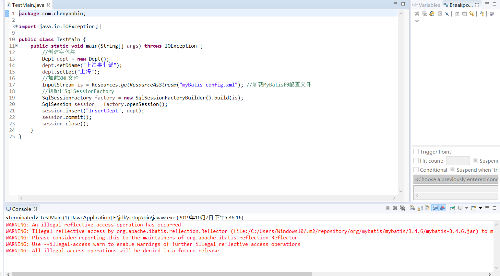

Maven项目对象模型(POM)，可以通过一小段描述信息来管理项目的构建，报告和文档的项目管理工具软件。
地址：直接下载
1 <dependencies>
2 <!-- 添加MyBatis框架3.4.6版本 -->
3 <dependency>
4 <groupId>org.mybatis</groupId>
5 <artifactId>mybatis</artifactId>
6 <version>3.4.6</version> <!-- 版本号视情况修改 -->
7 </dependency>
8 <!-- 添加MySql驱动包 -->
9 <dependency>
10 <groupId>mysql</groupId>
11 <artifactId>mysql-connector-java</artifactId>
12 <version>5.1.25</version>
13 </dependency>
14 </dependencies>
1 <?xml version="1.0" encoding="UTF-8"?>
2 <!DOCTYPE configuration
3 PUBLIC "-//mybatis.org//DTD Config 3.0//EN"
4 "http://mybatis.org/dtd/mybatis-3-config.dtd">
5 <configuration>
6 <environments default="development">
7 <environment id="development">
8 <transactionManager type="JDBC" />
9 <dataSource type="POOLED">
10 <property name="driver" value="com.mysql.jdbc.Driver" /> <!-- 驱动类型 -->
11 <property name="url" value="jdbc:mysql://localhost:3306/sam" /> <!-- 连接字符串 -->
12 <property name="username" value="root" /> <!-- 用户名 -->
13 <property name="password" value="root" /> <!-- 密码 -->
14 </dataSource>
15 </environment>
16 </environments>
17 <mappers>
18 <mapper resource="DeptMapper.xml" /> <!-- 映射SQL语句的XML文件 -->
19 </mappers>
20 </configuration> 1 <?xml version="1.0" encoding="UTF-8"?>
2 <!DOCTYPE mapper
3 PUBLIC "-//mybatis.org//DTD Mapper 3.0//EN"
4 "http://mybatis.org/dtd/mybatis-3-mapper.dtd">
5 <mapper namespace="Dept">
6 <!-- 插入单个部门信息 -->
7 <insert id="InsertDept">
8 INSERT INTO DEPT (DNAME,LOC)
9 VALUES (#{DName},#{Loc})
10 </insert>
11 </mapper>CRUD语法
1 <insert id="insertAuthor">
2 insert into Author (id,username,password,email,bio)
3 values (#{id},#{username},#{password},#{email},#{bio})
4 </insert>
5
6 <update id="updateAuthor">
7 update Author set
8 username = #{username},
9 password = #{password},
10 email = #{email},
11 bio = #{bio}
12 where id = #{id}
13 </update>
14
15 <delete id="deleteAuthor">
16 delete from Author where id = #{id}
17 </delete>表结构
1 package com.chenyanbin;
2
3 public class Dept {
4 //部门名称
5 private String DName;
6 //部门位置
7 private String Loc;
8 public String getDName() {
9 return DName;
10 }
11 public void setDName(String dName) {
12 DName = dName;
13 }
14 public String getLoc() {
15 return Loc;
16 }
17 public void setLoc(String loc) {
18 Loc = loc;
19 }
20 } 1 package com.chenyanbin;
2
3 import java.io.IOException;
4 import java.io.InputStream;
5 import org.apache.ibatis.io.Resources;
6 import org.apache.ibatis.session.SqlSession;
7 import org.apache.ibatis.session.SqlSessionFactory;
8 import org.apache.ibatis.session.SqlSessionFactoryBuilder;
9
10 public class TestMain {
11 public static void main(String[] args) throws IOException {
12 //创建实体类
13 Dept dept = new Dept();
14 dept.setDName("上海事业部");
15 dept.setLoc("上海");
16 //加载XML文件
17 InputStream is = Resources.getResourceAsStream("myBatis-config.xml"); //加载MyBatis的配置文件
18 //初始化SqlSessionFactory
19 SqlSessionFactory factory = new SqlSessionFactoryBuilder().build(is);
20 SqlSession session = factory.openSession();
21 session.insert("InsertDept", dept);
22 session.commit();
23 session.close();
24 }
25 }
以上配置完成，但是博主碰到一个问题，数据库保存进去了，程序警告，警告如下：
WARNING: An illegal reflective access operation has occurred
WARNING: Illegal reflective access by org.apache.ibatis.reflection.Reflector (file:/C:/Users/Windows10/.m2/repository/org/mybatis/mybatis/3.4.6/mybatis-3.4.6.jar) to method java.lang.Class.checkPackageAccess(java.lang.SecurityManager,java.lang.ClassLoader,boolean)
WARNING: Please consider reporting this to the maintainers of org.apache.ibatis.reflection.Reflector
WARNING: Use --illegal-access=warn to enable warnings of further illegal reflective access operations
WARNING: All illegal access operations will be denied in a future release
网上查了下，jdk8之后对反射做限制了，有两种解决方案